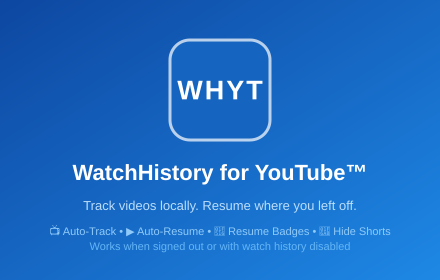
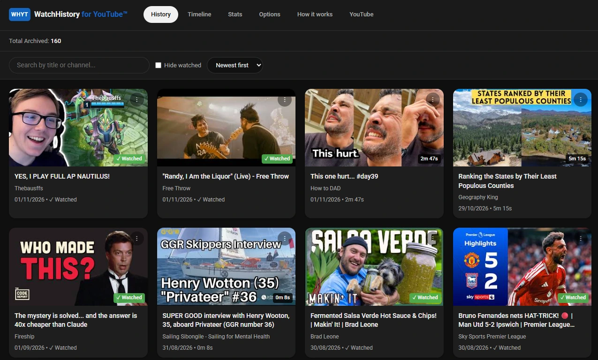
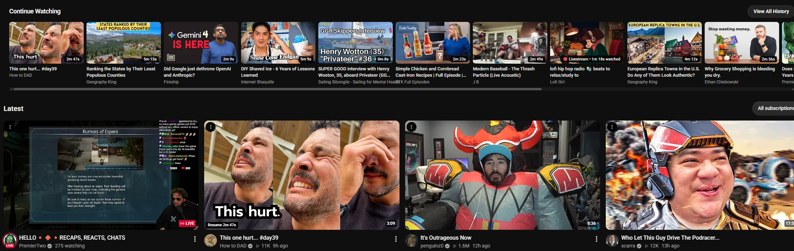
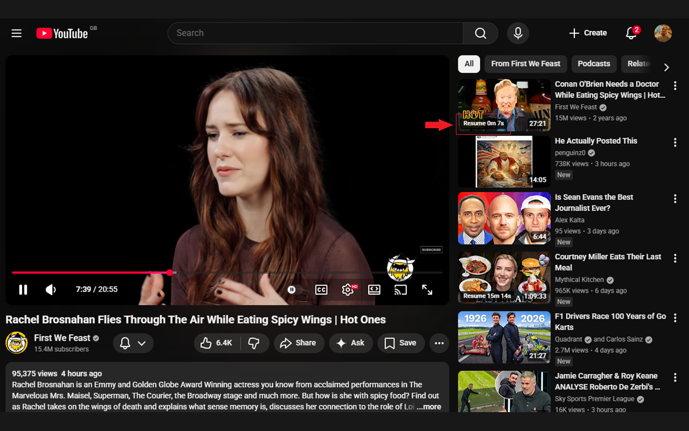
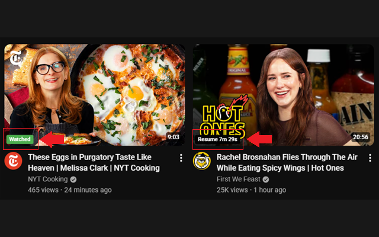
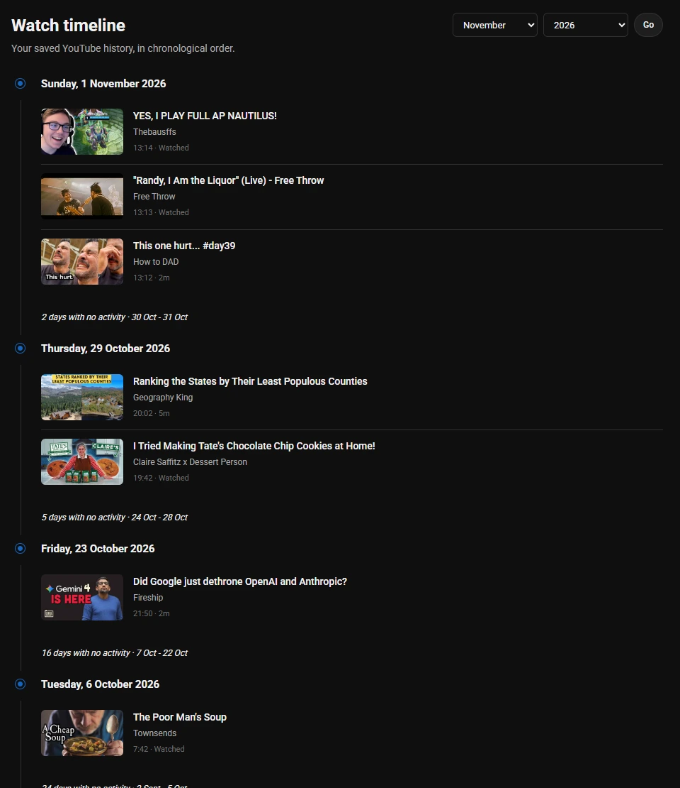
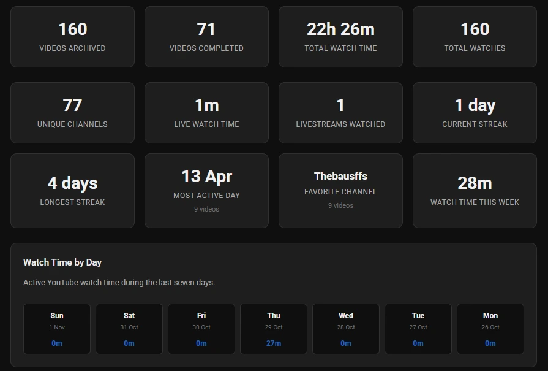
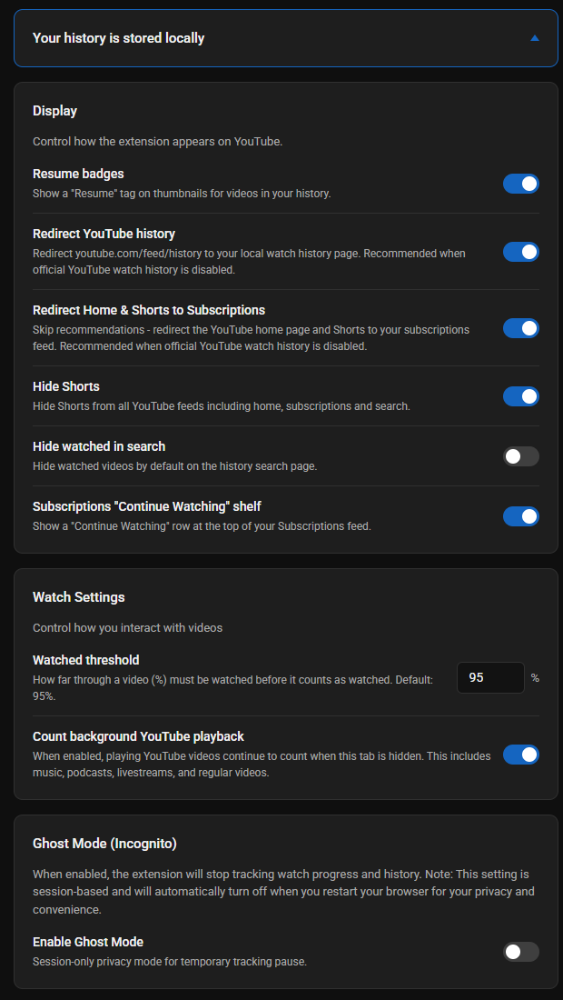

Install and allow YouTube access
Choose your desktop browser above, then allow the extension to work on www.youtube.com.
WatchHistory for YouTube™ saves your YouTube history and playback progress in your browser, so you can find videos again and resume unfinished ones, even when you’re signed out or YouTube history is disabled.
Your history stays in your browser.
No analytics. No cloud sync.
Independent and open source. Explore the code on GitHub.

Choose your desktop browser above, then allow the extension to work on www.youtube.com.
The extension starts saving videos and playback progress as you watch. Dedicated Shorts-feed playback is not recorded.
Search your history, use a Resume badge, or choose an unfinished video from Continue Watching.
Use the history overview to search, sort, and revisit videos. Watched labels and saved positions help you choose where to start.

Search your saved history, sort your videos, and hide watched ones to focus on unfinished videos.
Return to a saved video and carry on from your recorded position. Your progress is saved as you watch.
See Resume and Watched badges on YouTube thumbnails. Turn them on or off in settings.
Browse saved videos by day, jump to a month and year, and see gaps between viewing days.
Hide Shorts from YouTube Home, Subscriptions, and search feeds.
Videos are marked as watched when they reach your chosen completion threshold. The default is 95%.
See time spent watching or listening, recorded while a YouTube video is playing.
Explore watch time, streaks, channels, and viewing records. Copy a stats summary for your chosen period.
Choose whether playing videos in hidden tabs count toward watch time, including music and podcasts.
Track viewing or listening time for livestreams and replays, with channel details saved in your history.
Pause recording for the current session from the extension settings.
Export your history as a JSON backup. Import a backup to replace your existing saved history.
Pick up unfinished videos from the Continue Watching shelf on YouTube Home and Subscriptions.






Your history stays in this browser profile. The extension doesn’t upload it to us, and there’s no automatic cloud sync. Export a backup before removing the extension or clearing its stored data.
Saved history and settings live in your browser profile. Storage is subject to browser and device limits.
The extension has no analytics or tracking pixels.
Delete saved videos, clear your history, or export a JSON backup from options.
No. The extension records activity going forward. It cannot recover deleted official history or activity from before installation.
Yes. The extension saves its own history in your browser, so you can find videos and resume them while signed out or with YouTube history disabled.
Export a JSON backup from options and keep it somewhere safe. Importing JSON replaces your existing saved history. Export first if you want to keep the current records.
It pauses the extension’s history, progress, and watch-time recording for the session. It does not make YouTube browsing anonymous.
I prefer using YouTube with watch history turned off, but I still wanted to find videos I’d watched and pick up where I stopped.
I built it to keep those useful features without turning YouTube history back on. It saves history and playback progress locally in your browser, with no analytics or cloud sync.
It’s an independent, open-source project built around that simple idea: keeping a useful history in your browser instead of relying on your YouTube account.
Save your history locally and return to unfinished videos.